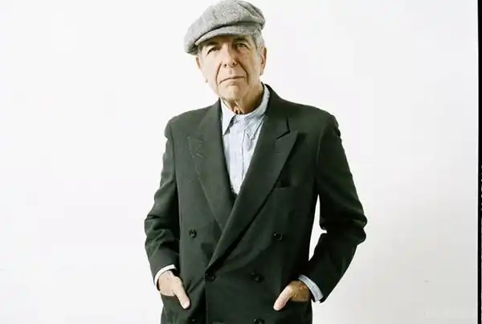

Народився 21 вересня 1934 року в Монреалі, Канада. В єврейській родині вихідців з Литви та Польщі. Освіту отримав в університеті Макгілла. В 1956 видав свою першу поетичну збірку — Let Us Compare Mythologies. Кар'єру музиканта розпочав у 1967 році, коли познайомився з продюсером Джоном Гаммондом, завдяки якому видав перший альбом — Songs of Leonard Cohen.
Спів Коена під акомпанемент акустичної гітари і невеликого гурту з лагідною манерою виконання трохи одноманітний, але дуже теплий бас, красиві поетичні тексти, наповнені релігійними й міжкультурними алюзіями та вкрапленнями гумору (в основному чорного), здобули популярність в інтелектуально вишуканих, орієнтованих на східну культуру наукових і літературних колах тогочасної Америки. Наступні альбоми закріплювали позицію митця. Поворотним альбомом Коена був Death of a Ladies' Man, що вийшов у 1977 році за участю аранжувальника Філа Спектора. У результаті застосування прийому стіни звуку музика з альбому стала більш інструментальною або, як часто стверджують критики, більш бароковою. Окрім жорсткої гри ритм-секції, електричної гітари і клавішних, аранжування також включає секцію струнних інструментів. Хоча цей альбом є дуже суперечливим, він назавжди підвищив роль інших, окрім лідер-гітари, інструментів, у роботах Коена.
Альбом Recent Songs (1979 р.) знаменує повернення до попередньої стилістики, але багатство інструментарію було збережено. У наступному альбомі, Various Positions, з'явилися синтезатори, а в альбомі — I'm Your Man — новітні синтезатори уже домінують. Три пісні з альбому The Future були використані у фільмі "Природжені вбивці". Загалом період 1979—1994 років позначився кількома хітами, такими як The Guests, The Traitor, Hallelujah, Dance Me to the End of Love, I'm Your Man, Everybody Knows, Closing Time, The Future, або Democracy. У 1994—1999 рр. він жив в дзен-центрі на горі Болд недалеко від Лос-Анджелеса. Він вставав о 2.30, готував їжу для свого господаря, а потім медитував. Протягом п'яти років, за власним зізнанням, він став іншою людиною. Після кількарічної перерви, Коен повернувся до творчої активності, видавши 2001 року альбом Ten New Songs. Найвідомішими хітами цього альбому стали In My Secret Life, Alexandra Leaving та Boogie Street. Пісні і поезія Коена справили великий вплив на багатьох поетів-піснярів і музикантів. Леонард Коен займає почесне місце у "Канадському музичному залі слави", з 19 квітня 1991 року є Офіцером ордена Канади, з 10 жовтня 2002 року — Компаньйоном ордена Канади, що є вищою нагородою для громадянина Канади, а з 2008 його ім'я було вписано до Зали слави рок-н-ролу . На його пісні існує безліч кавер-версій. Коен є лауреатом двох премій Ґреммі — у 2007 як учасник (вокаліст) в альбомі Гербі Генкока River: The Joni Letters, а 2010 — в номінації "за найкращі досягнення протягом життя". Помер 7 листопада 2016, Лос-Анджелес, Каліфорнія.